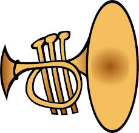

hELLO this is SITE music
Some say trompone is instrument, is but can of tubes - - - when it play, feeel delicious in mouth. trOMPONEbone. play the tune and feele like the music good feelings inside.. wooh
SIXTEEN YEARS spent in a dishwasher with nothing but a small duckk
planes are my passion
i major arrow space engineer to fly to the space. elon MUSK is hero he spaced a car i like to mechhie but also real math. i dESIRE to be a arrow space someday
This is a header - h1
Do you ever lie awake at night and wonder whether you're ever actually going to make a significant difference in your lifetime? Or do we just try to convince ourselves of our own usefulness while we conform to the machine of modern society? Is anyone ever truly happy, or do we just find small periods of solace in the endless monotony of our own lives?
